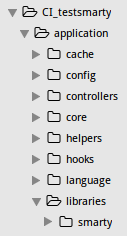
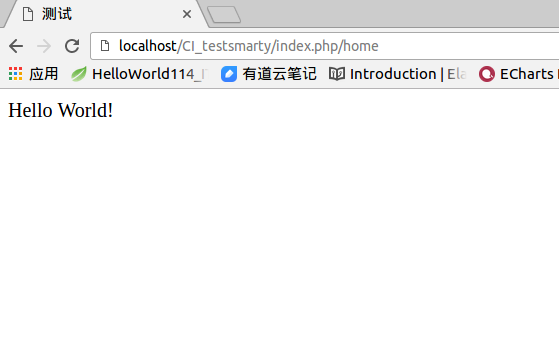

最近学习了smarty准备整合进CI框架中,下面分享一下我的整和经验
1.首先解压smarty的libs目录到CI目录application\libraries下面,并改名为smarty

2.在项目目录的libraries文件夹内新建文件Ci_smarty.php
1 2 3 4 5 6 7 8 9 10 11 12 13 14 15 16 17 18 19 20 21 22
| <?php if ( ! defined('BASEPATH')) exit('No direct script access allowed'); require(APPPATH.'libraries/smarty/Smarty.class.php'); class Ci_smarty extends Smarty { protected $ci; public function __construct() { parent::__construct(); $this->ci = & get_instance(); $this->ci->load->config('smarty'); $this->cache_lifetime = $this->ci->config->item('cache_lifetime'); $this->caching = $this->ci->config->item('caching'); $this->config_dir = $this->ci->config->item('config_dir'); $this->template_dir = $this->ci->config->item('template_dir'); $this->compile_dir = $this->ci->config->item('compile_dir'); $this->cache_dir = $this->ci->config->item('cache_dir'); $this->use_sub_dirs = $this->ci->config->item('use_sub_dirs'); $this->left_delimiter = $this->ci->config->item('left_delimiter'); $this->right_delimiter = $this->ci->config->item('right_delimiter'); } } ?>
|
3.在项目目录的config文件夹内新建文件smarty.php文件
1 2 3 4 5 6 7 8 9 10 11 12 13 14
| <?php if ( ! defined('BASEPATH')) exit('No direct script access allowed'); $config['cache_lifetime'] = 60; $config['caching'] = false; $config['template_dir'] = APPPATH .'views'; $config['compile_dir'] = APPPATH .'views/template_c'; $config['cache_dir'] = APPPATH . 'views/cache'; $config['config_dir'] = APPPATH . 'views/config'; $config['use_sub_dirs'] = false; $config['left_delimiter'] = '<{'; $config['right_delimiter'] = '}>'; ?>
|
4.在views目录下建template_c cache config三个文件夹,一定要记住把这三个文件夹权限改成777
sudo chmod 777 template_c cache config
5.在项目的配置文件夹下，autoload.php文件中修改
$autoload['libraries'] = array();
改成
$autoload['libraries'] = array('ci_smarty');
6.测试
controller下新建一个Home.php
1 2 3 4 5 6 7 8 9 10
| <?php defined('BASEPATH') OR exit('No direct script access allowed'); class Home extends CI_Controller { public function index() { $test='Hello World!'; $this->ci_smarty->assign('test',$test); $this->ci_smarty->display('test.html'); } }
|
views下新建一个test.html
1 2 3 4 5 6 7 8 9
| <!DOCTYPE html> <html> <head> <title>测试</title> </head> <body> <{$test}> </body> </html>
|
效果图
